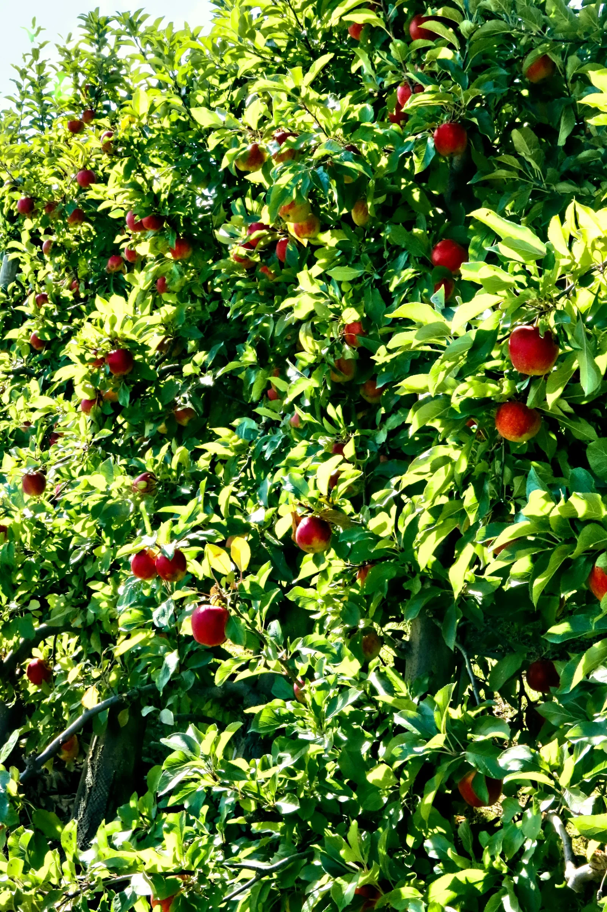

KashCrop / Made for the real world
From the field.
To your
fingertips.
Useful products start with the people who will use them.


Baghban
Orchard services & grower tools
Slide to move from context to the actual interface.Stock photo: Marek Studzinski / Unsplash · Not a client field photograph.
Built around life.
Not the other way round.
From a grower’s first question to a tree’s enduring identity, our work starts where it will be used. Explore the product, not a wall of promises.
Rooted in Kashmir.
Open to what’s next.
KashCrop Innovations.
Product design, engineering & applied AI.
Incubated at SKIIE, SKUAST-Kashmir.